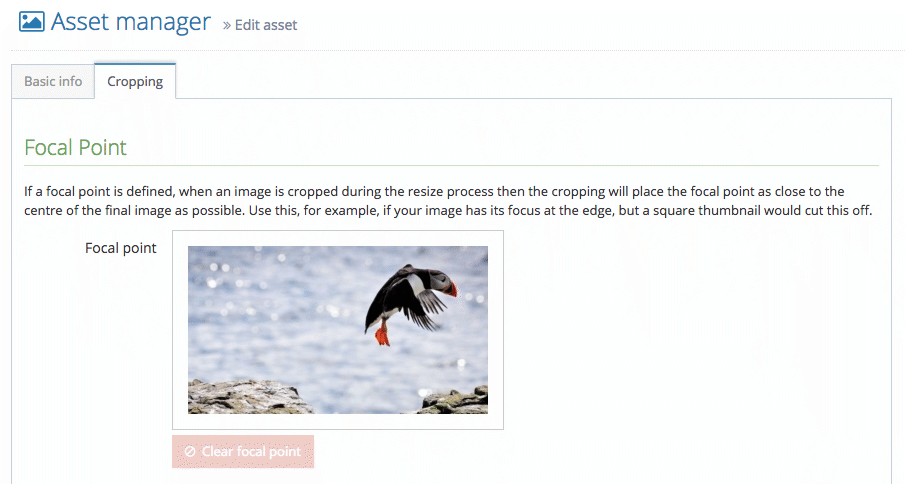
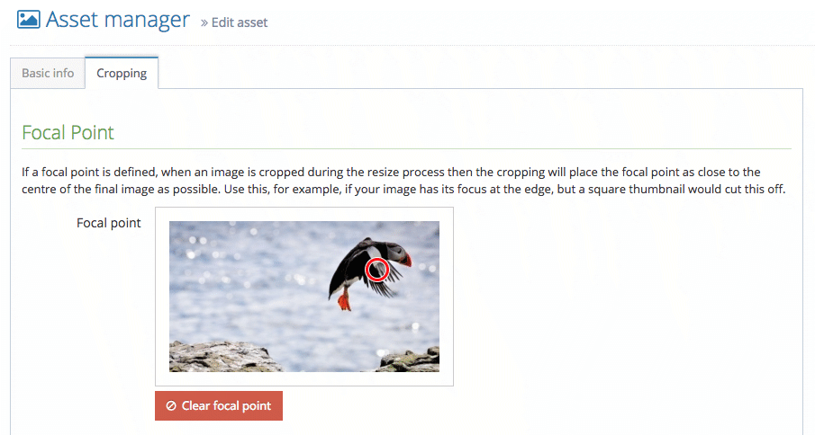

Working with images in Preside
Seb Duggan
Working with images in Preside
- Derivatives and transformations
- Rendering images in Preside
- Current limitations of derivatives
- New features in Preside 10.9
- Responsive images
- Demonstration in Preside
Derivatives
- Programmatically defined rules to transform assets
- Preside has a number of built-in derivatives
adminThumbnailpickerIcon
- Can be chained, for example to create a PDF page image before resizing
Transformation: shrinkToFit
- Requires
width and height arguments
- Optionally specify
quality (defaults to "highPerformance")
- Will resize the image to be contained within the dimensions
- Maintains the image’s aspect ratio
Transformation: shrinkToFit
settings.assetManager.derivatives.adminCropping = {
permissions = "inherit"
, transformations = [ {
method = "shrinkToFit"
, args = { width=300, height=300 }
} ]
};
Transformation: shrinkToFit
Transformation: shrinkToFit
Transformation: resize
- Takes
width and/or height arguments
- Optionally specify
quality (defaults to "highPerformance")
- Optionally specify
maintainAspectRatio (defaults to false)
Transformation: resize
settings.assetManager.derivatives.width300 = {
inEditor = true
, transformations = [ {
method = "resize"
, args = { width=300 }
} ]
};
Transformation: resize

Transformation: resize
Transformation: resize
settings.assetManager.derivatives.square300 = {
transformations = [ {
method = "resize"
, args = { width=300, height=300 }
} ]
};
Transformation: resize
Transformation: resize
Transformation: resize
settings.assetManager.derivatives.square300 = {
transformations = [ {
method = "resize"
, args = {
width = 300, height = 300
, maintainAspectRatio = true
}
} ] };
Transformation: resize
Transformation: resize

Rendering images: buildLink()
imageUrl = event.buildLink(
assetId = "..."
, derivative = "bannerImage"
);
- returns the URL of the image — use it how you like
- omitting
derivative will return the original image
Rendering images: renderAsset()
renderedImage = renderAsset(
assetId = "..."
, args = {
derivative = "bannerImage"
}
);
- default renderer returns the complete
<img> tag
Rendering images: renderAsset()
renderedImage = renderAsset(
assetId = "..."
, args = {
derivative = "bannerImage"
, class = "customClass"
, label = "Image description"
}
);
Custom image renderer
- By default,
renderAsset() uses the default renderer for the file type, e.g. renderers.asset.image.default
- Renderers are viewlets: can be just a view, or can have a handler
- Renderer can be targeted at specific filetypes, e.g.
renderers.asset.jpg.default
- Specify a context to use a custom renderer
renderedImage = renderAsset(
assetId = "..."
, context = "banner"
);
Custom image renderer
If context is banner, a JPEG image asset would be rendered using the first of these that is available:
renderers.asset.jpg.bannerrenderers.asset.image.bannerrenderers.asset.jpg.defaultrenderers.asset.image.defaultrenderers.asset.default
Custom image renderer
/application/views/renderers/asset/image/banner.cfm
<cfscript>
id = args.id ?: "";
label = args.label ?: "";
imageUrl = event.buildLink(
assetId = id
, derivative = "bannerImage"
);
</cfscript>
Custom image renderer
/application/views/renderers/asset/image/banner.cfm
<cfoutput>
<div class="banner-image">
<img src="#imageUrl#" alt="#label#" />
</div>
</cfoutput>
Resize limitations (1)

Resize limitations (1)
Resized using our 300x300 derivative:

Resize limitations (1)
How about a 650x200 banner derivative?

Resize limitations (1)
Previous options for dealing with this:
- Live with the bad cropping
- Upload an extra asset to the page — the same source image, but pre-cropped externally
- Places extra burden on the user
- Makes our page object untidy
Focal Points
Introduced in Preside 10.9

Focal Points
Introduced in Preside 10.9

Focal Points
Now our square crop will produce this:

Focal Points
...and our banner derivative:
- the crop is centred around the focal point
- still uses as much of the image as possible
Resize limitations (2)

Resize limitations (2)
Resized as a 100x100 thumbnail:
- Image is too small to distinguish
- Cropping a subset of the image still requires an extra asset
Crop Hints
Introduced in Preside 10.9
Crop Hints
Introduced in Preside 10.9

Crop Hints
Simply tell your derivative to use crop hints:
args = {
width = 100
, height = 100
, useCropHint = true
}
Crop Hints
Now our thumbnail will look like this:

- Crop hint area is maximised in resulting image
Crop Hints
Crop hints are also useful for cropping portraits:

Crop Hints
Crop hints are also useful for cropping portraits:

Crop Hints
Crop hints are also useful for cropping portraits:
img.avatar {
border-radius : 50%;
}
Responsive images
- Two different use cases
- Different resolutions of the same image
- Art direction: variations on an image
- Two methods of implementation
<img srcset="..."><picture/>
- Browser only load the appropriate variant
- Excellent support by modern browsers
- Degrades gracefully in older browsers
Responsive images: srcset
- Simplest method
- Ideal for alternate resolutions (e.g. Retina)
- Browser does the hard work
- Falls back to
src image if not supported
Responsive images: srcset

Browser support matrix from caniuse.com
Responsive images: srcset
<img src="small.jpg"
srcset="small.jpg 500w, medium.jpg 1000w, large 2000w"
sizes="(max-width: 480px) 100vw, 50vw"
alt="...">
- Specify width of each variant in pixels
sizes is optional; defaults to image being 100% wide
Responsive images: picture
- More complex, but more controllable
- Best for art direction
srcset can include multiple resolutions- Falls back to
<img> content if not supported
Responsive images: picture
Browser support matrix from caniuse.com
Responsive images: picture
<picture>
<source srcset="large.jpg" media="(min-width: 901px)">
<source srcset="medium.jpg" media="(min-width: 600px)">
<source srcset="small.jpg">
<img src="medium.jpg" alt="...">
</picture>
- Styling is done on the
<img> element
- Make it more granular with multiple
srcset items